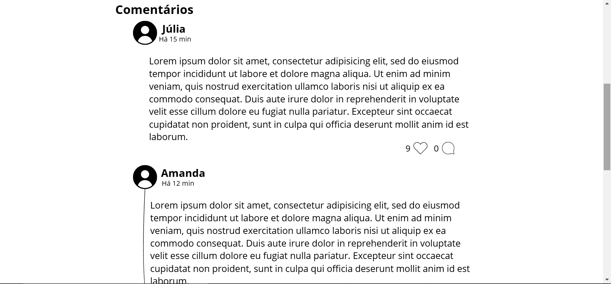
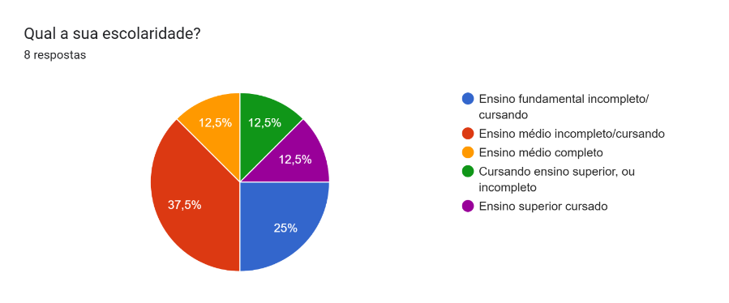

Feminismo e short nas escolas
Por Nicole Ferreira da Rosa
Tema e área do conhecimento
O tema é o uso da vestimenta e influência na vida das mulheres, se aplica na área de Ciências Humanas.
Problema
Por que as escolas deveriam parar de proibir o uso de shorts e como isso afeta na vida das mulheres na sociedade atual?
Justificativa
Com esse projeto, busco pesquisar como a proibição do uso de short nas escolas pode influenciar as mulheres da nossa sociedade atual, por exemplo como isso pode afetar na sua autoestima e até mesmo em sua vida cotidiana, trazendo pontos em como a proibição do uso de shorts influencia também na cultura do estupro e da pedofilia.
Na notícia “A luta de mães e meninas pelo direito de usar bermuda em escolas do ES”, do portal de notícias “A Gazeta”, podemos observar que esse não é um tema pontual, mas sim que pode ser relacionado com outras situações com várias meninas, escolas e estados diferentes, o que demonstra a relevância e importância de debater esse tema. A notícia fala que a escola decidiu proibir o uso de short e bermudas para as meninas a partir do sexto ano, a decisão teria sido tomada pois serviria como ferramenta de prevenir as meninas de sofrerem assédio.
Pessoalmente, quis pesquisar sobre esse tema, pois como mulher, me deparei com a situação da proibição de short nas diversas escolas em que estudei, incluindo minha atual escola. Achei muito curioso que mesmo as escolas apoiando o feminismo, na hora de apoiar as mulheres a se sentirem bem com seus corpos e protegê-las, de um jeito eficaz, como punir pessoas que assediam, estupram ou cometem pedofilia, preferem proibir o uso de uma peça de roupa, que na verdade não vai fazer com o índice desses crimes diminua, criando mais um espaço onde as mulheres se sentem oprimidas na nossa sociedade.
Objetivos:
Objetivo Geral
Meu objetivo é divulgar para a comunidade em geral o quão prejudicial para autoestima das mulheres é não permitir que elas usem a vestimenta que desejarem, principalmente no período da escola, que é onde as garotas ainda estão se desenvolvendo e construindo suas personalidades e como a proibição do short pode colaborar com a cultura do estupro e da pedofilia.
Objetivos Específicos
Este projeto de pesquisa tem como objetivos específicos:
- Pesquisar sobre como a questão dos shorts nas escolas pode influenciar na autoestima das mulheres e como corrobora na cultura do estupro e da pedofilia.
- Criar um formulário que busque coletar informações sobre meninas e mulheres que vivem ou já passaram por situações relacionadas ao uso de short ou outras vestimentas.
- Analisar e avaliar as informações coletadas para promover a divulgação adequada de informações.
- Criar um site que apresente informações de divulgação sobre o tema, e opere como um fórum onde mulheres podem se apoiar e falar sobre autoestima.
Referencial Teórico
Influência na autoestima e na liberdade e expressão
A liberdade de expressão, pilar fundamental da democracia, manifesta-se de diversas formas, inclusive na maneira como nos vestimos. No ambiente escolar, um espaço de aprendizado e desenvolvimento, essa liberdade deve ser incentivada, pois contribui para a formação de indivíduos críticos e autônomos. Ao proibir o uso de shorts, restringe-se a liberdade de expressão dos estudantes e envia uma mensagem equivocada sobre seus corpos e sua capacidade de fazer escolhas.
O uso de shorts, além de ser uma forma de expressão da diversidade e da pluralidade de pensamentos, pode contribuir para a autoestima dos estudantes, especialmente as meninas, que se sentem mais à vontade e confiantes com suas escolhas e seus corpos. Estudos demonstram que a liberdade de expressão está diretamente relacionada à autoestima e ao desempenho escolar. Ao reprimir a individualidade e a autonomia dos estudantes, reforça-se a ideia de que seus corpos são objetos de desejo e devem ser controlados.
É importante destacar que a sexualização do corpo não está intrínseca ao uso de shorts. A forma como as pessoas se vestem não define sua moralidade ou caráter. A sexualização é um problema cultural e social mais amplo, que não deve ser atribuído a determinadas peças de roupa. A proibição de determinadas vestimentas, especialmente para mulheres, tem raízes históricas profundas e está relacionada a questões de poder e controle.
A proibição do uso de shorts nas escolas pode ser interpretada como uma forma de regulação dos corpos femininos, limitando as possibilidades de expressão de gênero e reforçando a heteronormatividade. Conforme Judith Butler, o gênero é performativo e é construído através de repetições de atos e discursos. Ao restringir a vestimenta das meninas, a escola está impondo uma norma de feminilidade que pode não corresponder à experiência de todas.
Em vez de proibir, as escolas podem promover diálogos sobre a importância da diversidade, do respeito mútuo e da autonomia. É fundamental que os estudantes sejam ouvidos e que suas opiniões sejam consideradas na construção de um ambiente escolar mais inclusivo e democrático. Ao incentivar a liberdade de expressão e o respeito às diferenças, contribuímos para a formação de cidadãos mais conscientes e engajados.
Restrição na vida cotidiana e autonomia
A proibição do uso de shorts nas escolas é uma medida que reflete as profundas desigualdades de gênero presentes em nossa sociedade. Ao limitar a liberdade de expressão das meninas e reforçar a ideia de que seus corpos são objetos de desejo, essa medida contribui para a perpetuação de estereótipos e para a culpabilização das vítimas de assédio.
Conforme já citado no outro título, Judith Butler diz que o gênero é performativo e é construído através de repetições de atos e discursos. Ao restringir a vestimenta das meninas, a escola está impondo uma norma de feminilidade que pode não corresponder à experiência de todas. Essa norma, muitas vezes associada à passividade e à submissão, limita a autonomia das meninas e as impede de se expressar de forma autêntica.
A justificativa de que a proibição do short visa "não distrair os meninos" é um argumento falacioso que coloca a responsabilidade pelo assédio nas vítimas. Como afirma Laura Bates, em seu livro Violência Sexual: Uma História Cultural, a culpabilização das vítimas é uma estratégia comum para manter as relações de poder existentes.
É fundamental que as escolas promovam um ambiente seguro e inclusivo, onde todas as estudantes se sintam livres para expressar sua individualidade. Em vez de proibir o uso de shorts, as escolas podem investir em educação para a igualdade de gênero, na prevenção do assédio e no respeito às diferenças.
Impacto na cultura do estupro e pedofilia
A persistente associação entre o uso de shorts e a ocorrência de assédio e violência sexual é um reflexo de uma cultura profundamente enraizada no machismo e na culpabilização da vítima. A falsa premissa de que a roupa de uma mulher pode "provocar" um estupro é um argumento falacioso e perigoso, que desvia o foco do verdadeiro problema: a violência sexual é um crime cometido pelo agressor, e nunca pela vítima.
Como aponta Laura Bates, a ideia de que a roupa de uma mulher é um convite ao assédio é uma forma de transferir a responsabilidade pelo ato sexual para a vítima, isentando o agressor de suas ações. Essa responsabilização secundária não apenas vitimiza as mulheres, mas também perpetua um ciclo de violência e desigualdade de gênero.
A cultura do estupro, profundamente enraizada em nossa sociedade, culmina na culpabilização da vítima e na justificativa da violência sexual. Estudos revelam que 46% das mulheres brasileiras já sofreram algum tipo de assédio sexual, e muitas vezes, são questionadas sobre o que estavam vestindo no momento do ocorrido. Essa prática, além de vitimizante, desvia o foco do verdadeiro culpado: o agressor. É fundamental quebrarmos esse ciclo de violência através de uma educação sexual abrangente, que desconstrua estereótipos de gênero e promova o respeito às diferenças. Além disso, é preciso fortalecer as políticas públicas de combate à violência sexual, garantindo o acesso das vítimas a serviços de saúde e justiça, e promovendo campanhas de conscientização que responsabilizem os agressores e não as vítimas.
É comum que escolas e instituições utilizem o argumento da "proteção" das alunas para justificar a proibição de determinadas peças de roupa, como os shorts. No entanto, essa medida é ineficaz e contraproducente. Como afirma [inserir nome de autor/pesquisadora e referência bibliográfica], a educação sexual e de gênero é a ferramenta mais eficaz para prevenir a violência sexual, ensinando aos jovens o respeito mútuo, a igualdade e a importância do consentimento.
Metodologia
Em minha metodologia, fiz a revisão da literatura que conectou a questão do uso do short, a autoestima e a cultura do estupro e da pedofilia. Em seguida, fiz um questionário usando o site do Google Formulários, que foi implementado para o público jovem, contendo as seguintes perguntas:
- Qual a sua idade?
- Qual o seu gênero?
- Qual a sua escolaridade?
- Você já foi impedido de usar shorts na escola?
- Na sua escola, é ou era permitido usar shorts?
- Como você compreende que a liberdade de expressão, no quesito vestuário, impacta na autoestima das mulheres da nossa sociedade atual?
- Você consegue perceber a conexão entre a cultura do estupro e pedofilia a proibição do uso de short?
As palavras-chave desse questionário são: vestuário, shorts, escola, liberdade de expressão, autoestima, mulheres, cultura do estupro, pedofilia.
Após a implementação desse questionário, fiz a coleta e análise de dados. Verificando se as pessoas conheciam esse tema, se conseguiam perceber a conexão do estupro e pedofilia com a proibição do uso da vestimenta e se percebiam a necessidade de liberdade de roupa para o desenvolvimento das meninas. Estabelecendo relação com o referencial teórico.
Para a parte técnica do trabalho, fiz um site de apresentação do projeto, que feito com as linguagens HTML e CSS, e um protótipo de fórum aberto onde as pessoas podem fazer o login e comentar sobre, feito usando o Canva. O fórum é levemente inspirado no X, antigo Twitter, onde você pode postar textos e comentar nos posts das outras pessoas. O protótipo tem apenas uma tela que mostra alguns comentários apenas para exemplificar como seria o site. O site e o protótipo têm como cores bases o branco, o preto, o cinza e o rosa.
Figura 1: Na imagem acima temos o site de apresentação do projeto, que possui uma navbar cor de rosa com os títulos projeto, protótipo e contato, quando você clica na aba “projeto”, o site apenas desde um pouco a barra de rolagem para sinalizar que o texto contido ali é o projeto. Quando o botão “protótipo”, você é redirecionado para o site feito com o canva que será mostrado nas próximas fotos. O último botão da navbar direciona o usuário para o rodapé do site, que contém meu instagram e whatsapp.
Figura 2: Resultado para quando o usuário clica no botão contato, com a logo do Instagram e do Whatsapp, que quando clicados redirecionam para meus perfis nessas redes sociais.
Figuras 3, 4 e 5: Imagens do protótipo, mostrando que seria possível curtir as postagens das outras pessoas, comentá-las e compartilhá-las.
Resultados e discussões
Na primeira etapa da metodologia, foram feitas pesquisas teóricas principalmente com o uso do Google acadêmico, para procura de artigos científicos e projetos, porém também foram feitas pesquisas em livros e notícias. Já na segunda etapa, foi criado um formulário com a ferramenta Google Formulários, com 8 pessoas e com 7 perguntas.
Figura 6: Foto do gráfico resultante da primeira pergunta. Nessa primeira pergunta, foi pedido a idade dos participantes, onde metade tinha entre 12 e 17 anos, duas das pessoas tinham 36 anos ou mais, uma tinha entre 25 e 35 anos e a última pessoa tinha entre 18 e 24 anos.

Figura 7: A foto mostra o gráfico da segunda pergunta que era “Qual o seu gênero?”, onde 62,5% das pessoas que responderam eram mulheres, o que equivale a 5 pessoas, duas pessoas eram homens e uma era uma pessoa não-binária.

Figura 8: Na terceira pergunta, “Qual a sua escolaridade?”, três pessoas colocaram que tem o ensino médio incompleto/cursando, duas tem ensino fundamental incompleto/cursando, uma tem ensino médio completo, a outra está cursando o ensino superior ou incompleto e a última tem ensino superior completo.
Figura 9: A quarta pergunta foi “Você já foi impedida(o) de usar short na escola?”, onde 5 pessoas colocaram que sim e o resto colocou que não.
Figura 10: Nessa pergunta, foi perguntado se na escola dos participantes é o era permitido usar shorts, onde 5 pessoas colocaram que não era permitido e o restante colocou que era.
Figura 11: Na última pergunta objetiva, foi perguntado se os participantes conseguiam perceber a conexão entre a cultura do estupro e da pedofilia com a proibição do uso de short, onde 5 colocaram que não entendiam, dois que entendiam em partes, e uma única pessoa colocou que sim.
Houve também uma pergunta dissertativa, que era “Como você compreende que a liberdade de expressão, no quesito vestuário, impacta na autoestima das mulheres da nossa sociedade atual?”, na qual uma resposta se destacou: “Acredito que seja por que nós podemos acabar não nos sentindo confortáveis e a vontade com nossos corpos e pensando que algo nele é errado ou sujo”.
Considerações finais
Na conclusão desse trabalho, percebo que muitas pessoas não entendem o quão prejudicial é a proibição de shorts é para as estudantes e como ela pode reforçar ideias errôneas da sociedade nos pensamentos das crianças. É claro que ainda precisamos caminhar muito para que todos possamos usar o que quisermos em nossas escolas sem sermos ridicularizados ou censurados.
É necessário que nossa sociedade entenda que o corpo da mulher é da mulher, e precisa ser respeitado como o corpo de qualquer outra pessoa, respeitando suas características e escolhas para se vestir. Gostaria de frisar: roupa não é convite e não justifica assédio ou estupro.